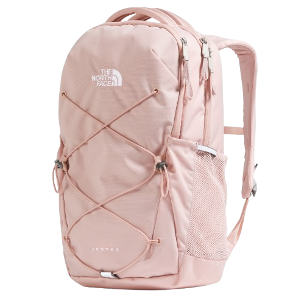

Currently
- SWE Intern @ World Wide Technology
- SWE Intern @ OpsCompanion
- Chapter President, Google Developers Group
scroll ↓

[ ABOUT ]
Hi, I'm Grace —
CS & Business @ Washington University in St. Louis · Class of 2028
Recruiting for SWE internships, Summer 2027
Research-trained, founder-tested. Here to build software where it matters.
[ EXPERIENCE ]
A story told in bloom
World Wide Technology
May 2026 — Present
Shipping an AI audit trail and supply-chain microservices (Vue 3, Node.js, Oracle) for 15+ enterprise clients.
OpsCompanion
May 2026 — Present
Designing the onboarding flow for a cross-platform Rust + React (Tauri) desktop app with native OS integrations and a GPU-accelerated UI.
Health XR (DentalTechup)
Sep 2025 — May 2026
Built a HIPAA-compliant pipeline turning 4,500+ dental visits into secure LLM training data.
WashU — Data Structures & Algorithms
Jan 2026 — May 2026
Led 15+ graders for 200+ students; automated assignment distribution in Python.
Capital One
2026
Chosen from a national pool to build a C/C++ Arduino IoT sensor bridge in Node.js.
United Way of Greater St. Louis
May 2024 — Apr 2025
One of 300 chosen from 7,000+ applicants. Flew to D.C. Learned a lot.
AmeriBakes
Feb 2024 — May 2025
Turned a baking obsession into $3,500 in revenue and 150+ happy customers.
[ PROJECTS ]
Dear reader,
Marketplace for WashU's 8,220-student campus to buy and sell MarketPoints (dining currency) — 230+ students onboarded. Google OAuth scoped to @wustl.edu, a JWT-authenticated FastAPI backend, and a real-time listing feed.
Dear reader,
Native iOS baking assistant with hands-free Kitchen Mode using Speech Framework and AVKit. Smart pantry algorithm powered by Spoonacular API.
Dear reader,
Gamified sustainability tracker with real-time state sync via Firebase and a live eco-news feed (NewsAPI) aggregating 150+ articles. Won 1st Place at the 2024 Congressional App Challenge; presented at House of Code in Washington D.C.
Dear reader,
Recipe translation and instant search app covering 100+ drinks for a multilingual team; reduced recipe lookup time by 90%.
[ MY GITHUB ACTIVITY ]
Loading activity…
What's in
My Bag?
CS SKILLS

[ RECOGNITION ]
8-course program: Python, Linux, SQL, SIEM & IDS tools.
Full tuition merit scholarship.
Presented at House of Code in Washington D.C.
Led DevFest WashU 2026: 100+ teams and $5k+ in sponsorships raised.
Perfect 4.0 across CS & Business coursework.
Selective residential summer program in EE/CS.

and that's
a wrap.